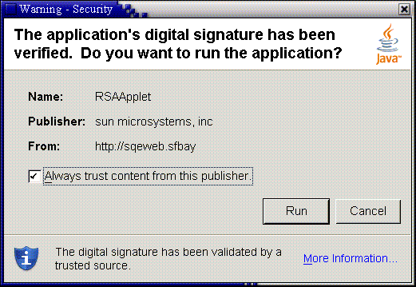

|
|
시큐리티 |
시큐리티에서는, 다음의 토픽에 대해 설명합니다.
Java Web Start 혹은 Java Plug-in 를 사용해 배치된 Java 어플리케이션 및 애플릿은, 디폴트에서는, 시큐리티 보호된 샌드 박스내에서 실행됩니다. 샌드 박스는 신뢰되어 있지 않은 어플리케이션의 코드에 부여하는 일련의 액세스권을 정의합니다.
표준의 Java 정책 파일은, 신뢰되어 있지 않은 어플리케이션에 부여하는 액세스권을 확장하기 위해서 사용됩니다. $JRE_HOME/lib/security/java.policy 및 $USER_HOME/.java.policy (모든 java 프로그램에 의해 사용된다)에 가세해, Java Web Start 및 Java Plug-in 에 의해 로드 되는 어플리케이션과 애플릿은, 2 개의 정책 파일을 추가적으로 로드합니다. 그러한 포함 장소는 배치 구성 프로퍼티,deployment.user.security.policy 및 deployment.system.security.policy 에 의해 설정됩니다.
디폴트의 샌드 박스는, 이러한 정책 파일에 의해 부여된 액세스권이 존재하면, 그것들을 조합해, 신뢰되어 있지 않은 코드에 부여하는 액세스권을 결정합니다.
이제(벌써) 1 개의 정책 파일의 포함 장소는 배치 구성 프로퍼티 deployment.security.trusted.policy 에 의해 결정되어 신뢰된 코드에 부여하는 액세스권을 제한하기 위해서 사용됩니다. 디폴트에서는, 이 프로퍼티은 설정되지 않습니다. 그 경우, 신뢰된 코드에는 AllPermission 액세스권이 부여됩니다. 이 프로퍼티이 설정되었을 경우, 신뢰된 코드에는, 신뢰되어 있지 않은 코드에 부여된 액세스권과 이 프로퍼티으로 지정하는 정책 파일에 의해 부여된 다른 액세스권만이 부여됩니다.
배치 구성에는, 코드를 신뢰할지 어떨지, 또 어떻게 신뢰할까를 결정하기 위해서(때문에), 몇개의 프로퍼티이 갖춰져 있습니다. 일반적으로, Java Plug-in 의 임의의 서명되고 있는 파일, 및 AllPermission 액세스권을 요구해, jnlp 파일에 의해 지정되는 Java Web Start 내의 서명된 JAR 파일의 임의세트에는, 증명 체인이 검증되어 결과가 시큐리티 다이얼로그에 표시되고 나서, 신뢰가 주어집니다.
배치 구성 프로퍼티 deployment.user.security.trusted.certs 는, 사용자에 의해 벌써 허가된 증명서를 포함한 증명서 스토어를 지정합니다.
배치 구성 프로퍼티 deployment.system.security.trusted.certs 는, 시스템 관리 책임자에 의해 미리 허가되고 있는 증명서의 증명서 스토어를 지정하도록(듯이) 설정할 수 있습니다.
Java Plug-in 에 있어서의 JAR 파일, 또는 Java Web Start 에 있어서의 AllPermission 액세스권을 요구하는 jnlp 파일의 JAR 파일군은, 이러한 스토어의 1 개에 있는 증명서로 서명되면(자), 신뢰가 부여됩니다.
배치 구성 프로퍼티 deployment.security.askgrantdialog.show 는, 새로운 증명서를 사용해 서명된 새로운 코드에 신뢰를 부여하는 허가를 사용자에게 줄지 어떨지를 제어합니다. 배치 구성 프로퍼티 deployment.security.askgrantdialog.notinca 는, 한층 더 루트 증명서가 인증국의 루트 증명서 스토어 (이하를 참조)에 없는 증명서에 의해 서명된 코드에 대해서, 신뢰를 부여하는 허가를 사용자에게 줄지 어떨지를 제어하기 위해서 사용됩니다.
상기의 2 개의 프로퍼티이 허가해, 코드가 적절히 검증된 증명서 체인을 사용해 서명되고 있는 경우, 코드에 신뢰를 줄지 어떨지를 묻는 시큐리티 다이알로그 박스가 표시됩니다.

「Run」를 클릭하면(자), 다음의 다이얼로그가 표시됩니다.
상기의 인증국의 루트 증명서 스토어는,deployment.user.security.cacerts 및 deployment.system.security.cacerts 프로퍼티에 의해 지정된 파일내에 포함되는 증명서의 집합입니다. 디폴트에서는 deployment.system.security.cacerts 는,jre/lib/security 디렉토리의 cacerts 파일을 지정합니다. deployment.user.security.cacerts 는, Java 컨트롤 패널의 「시큐리티」탭에 있는 「증명서」다이알로그 박스를 사용해 임포트 되는, 임의의 추가된 cacerts 를 포함한 파일을 지정합니다.
사용자가 사용하는 Java Web Start 의 커스터마이즈에는 최종의 설정이 사용됩니다. 디폴트에서는, 샌드 박스에,AWTPermission showWindowWithoutWarningBanner 는 포함되지 않습니다. 이 액세스권이 없으면 모든 톱 레벨의 윈도우에, awt 배너 「Java Application Window」또는 「Java Applet Window」가 표시됩니다. 배치 구성 프로퍼티 deployment.security.sandbox.awtwarningwindow 는, 신뢰되어 있지 않은 코드에 이 액세스권을 추가하기 위해서 사용됩니다.